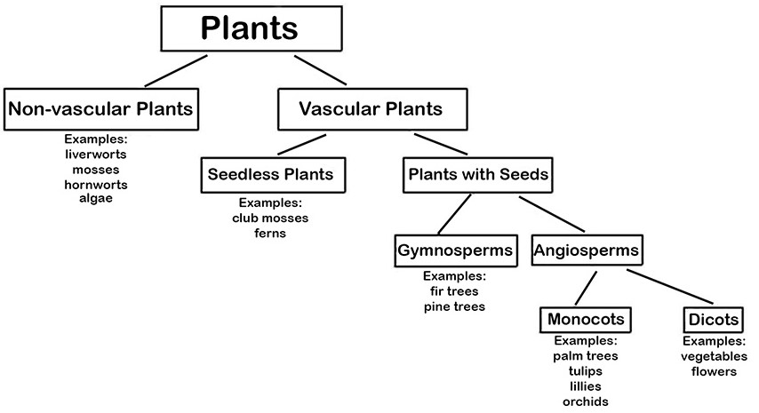

What are Plants? Plants are living organisms composed of one or more cells. A cell is the smallest unit that can be said to be alive. Some plants —such as some types of algae— are a single cell. (Similarly, some animals, like amoebas, are a single cell.)
Like animal cells, each plant cell has a nucleus (see the picture of a plant cell below). Having a cell nucleus is a key characteristic of all living things.
One difference between plant and animal cells is that the cells of plants have "walls", which are rigid and firm. Animal cells do not have cell walls but thinner cell membranes. This makes sense because plants do not have skeletons that support them. If plant cells did not have firm cell walls, plants would be more or less shapeless blobs.
In the cell shown below, you can put the cursor on the red triangles to see a description of the tiny organs ("organelles") and other substances inside the cell.
Plants usually grow in one location (rather than move around, like most animals do). Because of this, plants must depend on their local environment —and themselves— for nourishment. Plants get some nutrients they need through the absorption of water and minerals through their roots.
Plants make their own food (sugars) through the process of photosynthesis. In this process, sunlight provides the energy to convert carbon dioxide and water into sugars. This process happens in the chloroplasts in the cells of plant leaves.
Plants can be divided into two main groups: Vascular and Non-vascular. (See the diagram below.)
Plant Hierarchy



***Note for Teachers: You can access more information about this website and find other resources for science inquiry on the ISP Tutor website.
©2021 Klahr Lab, Carnegie Mellon University. All Rights Reserved
Carnegie Mellon University | Dept. of Psychology | 5000 Forbes Ave. | Pittsburgh, PA 15213 The TED project was funded in part by the Institute of Education Science (IES), Grant R305H060034, and in part by the National Science Foundation, Grant SBE035442. The ISP Tutor project is funded by IES, Grant R305A170176.
The research reported here was supported by the Institute of Education Sciences, U.S. Department of Education, through Grant R305A170176 to Carnegie Mellon University. The opinions expressed are those of the authors and do not represent views of the Institute or the U.S. Department of Education.